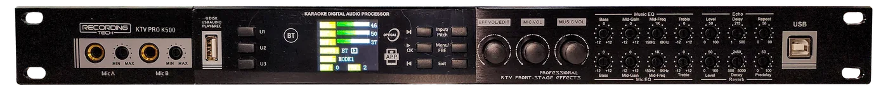

Shape your music
Adjust music EQ and tonal balance with a clear response graph so you can see what you are changing.
SonKuPik K500 brings the whole karaoke signal chain into one clear native Windows app — music, microphones, vocal effects, Main, Center, Surround, Subwoofer, device modes, and presets.


You do not need to think like an audio engineer. Start with what you want to improve, and each SonKuPik section keeps the relevant controls together.
Adjust music EQ and tonal balance with a clear response graph so you can see what you are changing.
Tune microphone tone, dynamics, reverb, and echo from dedicated screens instead of one crowded panel.
Control Main, Center, Surround, and Subwoofer independently for clearer vocals, wider ambience, and tighter bass.
Recall modes, work with official or local presets, preview settings, and perform deliberate device uploads from one System workspace.
These are actual SonKuPik K500 screens from the current application — not concept renders.
See the EQ curve, select a band, and adjust frequency, gain, and Q without losing sight of the overall response.

Dedicated microphone controls keep vocal tone and dynamics separate from music and speaker-output settings.

Shape the reverb return independently so ambience can feel bigger while the lead vocal stays intelligible.

Keep delay and tone adjustments in one focused effect screen, separate from reverb and dry microphone tone.
Music, dry microphone, reverb, and echo are not forced into one confusing page. You can solve one audible problem at a time and keep the rest untouched.
A great karaoke system is not just “left and right.” SonKuPik exposes the K500's dedicated Main, Center, Surround, and Subwoofer paths so each part of the room can be optimized independently.

Main is the primary front image. Fine-tune its output EQ and speaker path so music and vocals arrive balanced before the other channels add support.

The Center path can support the vocal image without forcing the Main speakers to do everything. Tune its tone separately to strengthen presence and focus where the singer should feel centered.

Surround has a different job from Main. Shape it independently to support spaciousness, room coverage, and ambience while keeping the primary vocal image clean up front.

Tune the low-frequency path separately instead of boosting bass everywhere. This gives you more control over weight, punch, and integration with the main speakers.
The System section is where SonKuPik becomes more than a live editor. Work with K500 equipment modes and your PC preset library while keeping preview, staging, and permanent upload clearly separated.

Download the Windows Setup package and install SonKuPik K500.
Connect the K500 by USB. The app reads the processor state before enabling live editing.
Work from Music and Mic through every output section, or preview a preset before a permanent upload.
Need more detail? Open the user guide →
The friendly interface sits on top of a conservative device model: hardware readback is authoritative, preset files are validated, unknown commands stay read-only, and permanent writes use verified transactions.
Stable support is qualified for Windows 10/11 x64 with K500 over USB HID.
The current open-source Windows binaries are unsigned. Windows SmartScreen may show a warning for new downloads; SHA-256 verification files are published with each release.